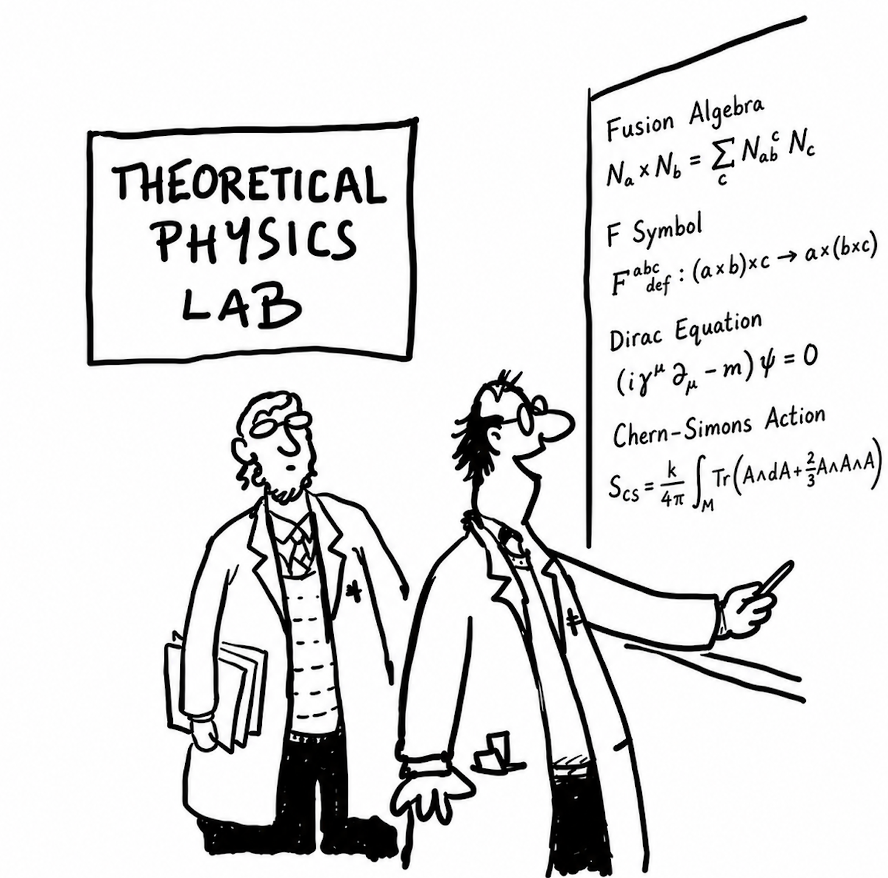

Quantum Stochastic Processes with Kirkwood-Dirac Quasiprobabilities
Nanyang Technological University, School of Physical and Mathematical Sciences (SPMS)
- Venue
- 中南大学潇湘校区物理楼541
- Tencent Meeting
- 933-971-036 (password: 1927)
Abstract
NA
Zhian Jia's Research Group · Institute of Quantum Physics · School of Physics · Central South University
数学与理论物理课题组
Our group works in mathematical physics and theoretical physics, exploring the mathematical structures of quantum theory—from quantum fields and quantum many-body systems to quantum information and computation. We connect quantum field theory, quantum algebras, topological phases, and quantum information through the “It from Qubit” paradigm, with an emphasis on rigorous methods and explicit physical models.
我们课题组研究数学物理与理论物理， 探索量子理论的数学结构，包括量子场和量子多体理论，量子信息与量子计算。 我们将量子场论、量子代数、拓扑相和量子信息联系起来，尤其注重严格方法和具体的物理模型。

Mathematical and Theoretical Physics Seminar 数学与理论物理研讨会
All times are China Standard Time (UTC+8).
Nanyang Technological University, School of Physical and Mathematical Sciences (SPMS)
NA
Zijie Wan 万梓杰
Nankai University, Chern Institute of Mathematics
Anyon condensation provides a powerful framework for understanding phase transitions between topological orders. While a systematic bootstrap analysis for bosonic anyon condensation has been well established (Kong 2014), a rigorous mathematical treatment of fermion condensation remains underdeveloped. In this talk, we apply a bootstrap approach to $2d$ condensation from a bosonic topological order (described by $\mathcal{C}$, a unitary modular tensor category (UMTC)) to a fermionic topological order (described by $\mathcal{D}$, a UMTC over $\text{sRep}(\mathbb{Z}_2^f)$). We show that the local excitations in $\mathcal{D}$ — a local boson and a local fermion — correspond to a direct sum $A = A_0 \oplus A_1$ in $\mathcal{C}$, which forms a connected supercommutative symmetric normalized-special super $*$-Frobenius algebra with $\dim A_0 = \dim A_1$. We call this a fermionic $2d$-condensable algebra. Then we use bootstrap method to analyze the properties of the condensed phase $\CD$ and the domain wall $\CE$ between these two topological phases. We also discuss the bulk-to-wall maps and compare with the familiar bosonic condensation scenario.
Mei-Hui Xiao 肖美慧
Sun Yat-sen University, School of Physics and Astronomy
Traditional descriptions of internal symmetry begin with a field algebra, a symmetry group, and a Hilbert-space representation. The observable algebra is then obtained as the fixed-point algebra, and the Hilbert space decomposes into charge sectors associated with irreducible representations of the symmetry group. In contrast, DHR superselection theory adopts a bottom-up perspective: it starts from the net of local observable algebras and describes charges as localized and transportable representations that agree with the vacuum representation outside bounded regions.For infinite quantum lattice systems, the usual representation-theoretic formulation remains dependent on a distinguished ground-state representation. DHR bimodule theory replaces states by unital completely positive maps and Hilbert-space representations by bimodule. Applied to the identity channel of the quasi-local algebra, this construction produces a canonical, state-independent C*-tensor category of localizable bimodules. In this talk, I will review the basic structure of DHR theory, introduce DHR bimodules and their localization condition, and explain the role of weak algebraic Haag duality in constructing a braiding. I will conclude with fusion spin chains associated with a unitary fusion category, whose DHR bimodule category is braided equivalent to the Drinfeld center.
Weiguang Cao 曹伟光
University of Southern Denmark, Centre for Quantum Mathematics
Recently, the notion of symmetry has been generalized, including high form, subsystem, and noninvertible symmetries. These novel symmetries have extended our understanding of topological phases of matter. In this talk, I will review the recent development on generalized symmetry, with a focus on noninvertible symmetry and the phases protected by it. I will present a general method to classy a broad class of noninvertible symmetry protected topological phases (NISPTs), together with concrete lattice realizations. Finally I will show that NISPT is a natural platform to exhibit the connection between noninvertibility and entanglement.
No seminars listed for this year.
Alexei Kitaev
Preprint · arXiv:2405.02434
David E. Evans, Corey Jones
Preprint · arXiv:2507.05185
Principal Investigator
Zhian Jia investigates quantum theory using mathematical structures, with interests in topological field theories, generalized symmetry, quantum information and quantum computation.
He received his doctorate in physics from the University of Science and Technology of China and previously worked at the Centre for Quantum Technologies, National University of Singapore. Currently, he is an associate professor at the Institute of Quantum Physics, School of Physics, Central South University.
We welcome inquiries from undergraduate and graduate students interested in quantum information, mathematical physics and theoretical physics. Applicants with backgrounds in physics or mathematics are encouraged to get in touch.
欢迎对量子信息、数学物理和理论物理感兴趣的本科生与研究生联系我们。 我们欢迎具有物理或数学背景的同学加入，共同探索量子理论的数学结构与物理问题。
Contact Zhian Jia 请通过以下邮箱联系我们 giannjia@foxmail.com